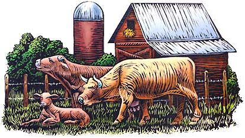

*In cases of abnormal posture, the fetus should be repelled into the birth canal so that the limb or head can be manipulated into normal position. Orbital hooks or jaw snares may have to be used carefully to pull the head around.